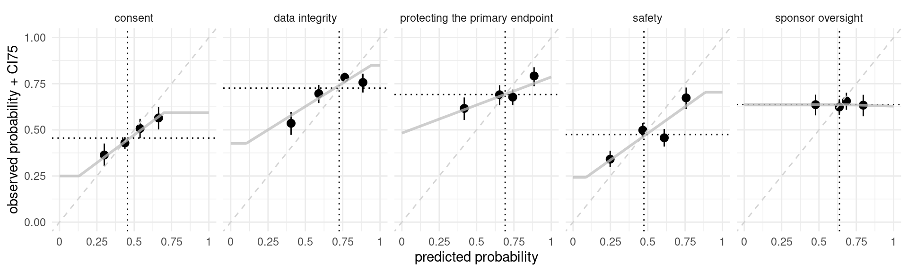

suppressPackageStartupMessages(library(tidyverse))
library(targets)
library(DT)knitr::opts_knit$set(root.dir = "../../")df_perf <- tar_read(df_perf)df_perf %>%
filter(.metric == "roc_auc") %>%
knitr::kable(digits = 2)| category_id | .metric | mean | sd | n |
|---|---|---|---|---|
| cnsn | roc_auc | 0.61 | 0.15 | 8 |
| dtin | roc_auc | 0.60 | 0.10 | 8 |
| ptpe | roc_auc | 0.59 | 0.06 | 8 |
| sfty | roc_auc | 0.63 | 0.07 | 8 |
| spno | roc_auc | 0.53 | 0.06 | 8 |
df_perf %>%
filter(.metric == "brier") %>%
knitr::kable(digits = 2)| category_id | .metric | mean | sd | n |
|---|---|---|---|---|
| cnsn | brier | 0.24 | 0.03 | 8 |
| dtin | brier | 0.19 | 0.04 | 8 |
| ptpe | brier | 0.23 | 0.04 | 8 |
| sfty | brier | 0.25 | 0.03 | 8 |
| spno | brier | 0.24 | 0.03 | 8 |
tar_read(df_calib) %>%
select(- plot_data) %>%
knitr::kable(digits = 3)| category_id | lower | base_rate | upper | intercept | slope |
|---|---|---|---|---|---|
| cnsn | 0.250 | 0.455 | 0.593 | 0.171 | 0.603 |
| dtin | 0.426 | 0.726 | 0.849 | 0.374 | 0.506 |
| ptpe | 0.482 | 0.691 | 0.786 | 0.482 | 0.304 |
| sfty | 0.242 | 0.474 | 0.704 | 0.193 | 0.577 |
| spno | 0.628 | 0.637 | 0.637 | 0.654 | -0.026 |
tar_read(p_calib)